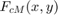

Example 1 -- generate surrogate model for homogenous input field
This code shows how to generate a surrogate model when the uncertain input is just a random variable
Contents
- 1. Define the prior distribution of the uncertain parameter 
- 2. Specify the orthogonal basis polynomials.
- 3) Compute the squared norms of the basis polynomials
- 4) Get the integration points and weights
- 5) Map the integration points to the uncertain parameter
- 6) Compute the measurable response by the FEM solver at the integration points
- 7) Evaluate all basis functions at the integration points
- 8a) Compute the PCE coefficients
- 8b) Compute coefficients by vectorization (faster)
1. Define the prior distribution of the uncertain parameter
mean_fcm = 5.5; % variance of the longnormally distributed parameter var_fcm = 10.0; % compute parameters of the distribution (mean and std of the underlying % Gaussian distribution) mu = log((mean_fcm^2)/sqrt(var_fcm+mean_fcm^2)); sig = sqrt(log(var_fcm/(mean_fcm^2)+1)); % Define the parameter with the desired distribution f_cm = MySimParameter('f_cm', LogNormalDistribution(mu,sig)); % Determine the map from the reference random variables $X$ to $F_{cM}$ F = @(xi)f_cm.germ2param(xi);
2. Specify the orthogonal basis polynomials.
Let's choose the properties of the basis
is_normalised = false; % The polynimials that are orthogonal wrt. the underlying Gaussian measure polynomial_system = f_cm.get_gpc_polysys(is_normalised); % And the corresponding 'system character' for these orthogonal (Hermit) polynomials is sys_char = f_cm.get_gpc_syschar(is_normalised); % max degree of expansion gpc_degree = 3; % Set approximating subspace for the proxi model V_y=gpcbasis_create(sys_char, 'p', gpc_degree); % Show basis polynomials display(gpcbasis_polynomials(V_y)) % number of polynomials M = gpcbasis_size(V_y, 1);
4×1 cell array
{'1' }
{'x1' }
{'x1^2-1' }
{'x1^3-3x1'}
3) Compute the squared norms of the basis polynomials
h_alpha = gpcbasis_norm(V_y, 'sqrt', false);
display(h_alpha');
1 1 2 6
4) Get the integration points and weights
order of 1D integration rule
p_int = gpc_degree + 1; % integration points and weights [x_j, w_j] = gpc_integrate([], V_y, p_int, 'grid', 'full_tensor'); % number of integration points N = length(w_j); display(x_j); display(w_j);
x_j =
-2.3344 -0.7420 0.7420 2.3344
w_j =
0.0459
0.4541
0.4541
0.0459
5) Map the integration points to the uncertain parameter
f_cm_j = F(x_j); display(f_cm_j);
f_cm_j =
1.3694 3.2073 7.0885 16.6019
6) Compute the measurable response by the FEM solver at the integration points
[y_k_j, X, Y] = call_FEM_solver(f_cm_j); k=25; display(y_k_j(k, :))
-0.0015 -0.0038 -0.0087 -0.0206
7) Evaluate all basis functions at the integration points
psi_alpha_j = gpcbasis_evaluate(V_y, x_j); display(psi_alpha_j)
psi_alpha_j =
1.0000 1.0000 1.0000 1.0000
-2.3344 -0.7420 0.7420 2.3344
4.4495 -0.4495 -0.4495 4.4495
-5.7181 1.8174 -1.8174 5.7181
8a) Compute the PCE coefficients
number of measurable responses
n_y = 60; % initiate matrix for PCE coefficients upsilon_k_alpha = zeros(n_y, M); for j = 1:N upsilon_k_alpha = upsilon_k_alpha + (w_j(j) * y_k_j(:,j) * (psi_alpha_j(:,j)./h_alpha)'); end
8b) Compute coefficients by vectorization (faster)
upsilon_k_alpha = y_k_j*(diag(w_j)* psi_alpha_j'/(diag(h_alpha))); display(upsilon_k_alpha(k, :));
-0.0067 -0.0037 -0.0010 -0.0002